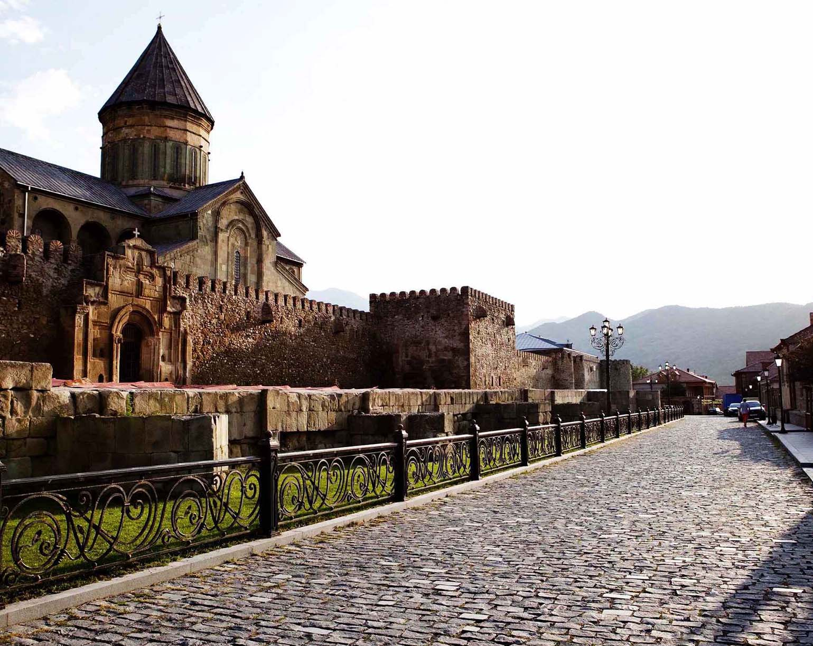
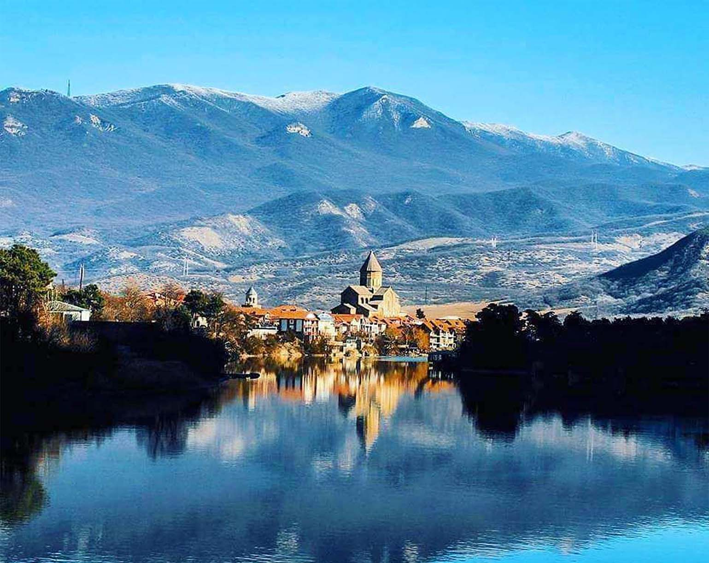

Мцхета
Мцхета является самым священным городом для паломничества в Грузии, и объявлена объектом Всемирного наследия ЮНЕСКО. Мцхета находится всего в 20 км к северу от Тбилиси, в районе Мцхета-Мтианети. Город с населением около 8000 человек является одним из главных туристических направлений в Грузии.
Древняя история Мцхеты увлекательна и известна довольно подробно. Город был основан в V веке до нашей эры коренными племенами мешхинов, которые, как считается, первоначально эмигрировали из Анатолии (Турция). Легенда гласит, что город был назван в честь легендарного правителя Мцехотоса, сына первого царя Картли.
Мцхета считается центром языческого культа в дохристианские времена. В грузинской мифологии рассказывается об огромных монолитах Армази – верховного языческого бога, главы пантеона богов и других божеств. Одна легенда утверждает, что статуи Армази и Задена были разрушены молитвами Святой Нино.
Мцхета расположена в широкой низменности на берегах рек Арагви и Кура, слияние которых придает воде насыщенный оранжевый оттенок. Окружающая территория полузасушливая с широкими склонами и холмами, окруженными горными хребтами. Окрестности города усеяны дачами и виллами. Мцхета стала одним из самых эксклюзивных пригородов Тбилиси... среди местных жителей она считается одним из лучшим мест, с завораживающей красотой и мягким климатом, которыми можно наслаждаться круглый год.
На холме, возвышающемся над Мцхетой, находится почитаемый монастырский храм Джвари, название которого переводится как «крест». По преданию, Джвари является местом, где святая Нино установила священный крест, чтобы символизировать принятие Грузией христианства в IV веке н.э. Предполагается, что это место использовалось еще в дохристианские времена, когда языческие культы собирались здесь для поклонения силам природы. Традиция «Натврис Хе» все еще происходит на ветреном склоне около Джвари, где прикрепляют ленты к Дереву Желаний в надежде, что их пожелания будут исполнены.
Мцхета находится всего в 15 минутах езды от Тбилиси, поэтому такси - самый удобный способ добраться, но желательно заказать такси заранее и по самым доступным тарифам. Маршрутки отправляются в Мцхету со станции Дидубе несколько раз в день, но их график может меняться. До большинства достопримечательностей Мцхеты можно легко дойти пешком. Прокат велосипедов предоставляется в центре города рядом с сувенирным базаром напротив главного собора. Такси дешево, но не так часто встречается на улице, как в Тбилиси.